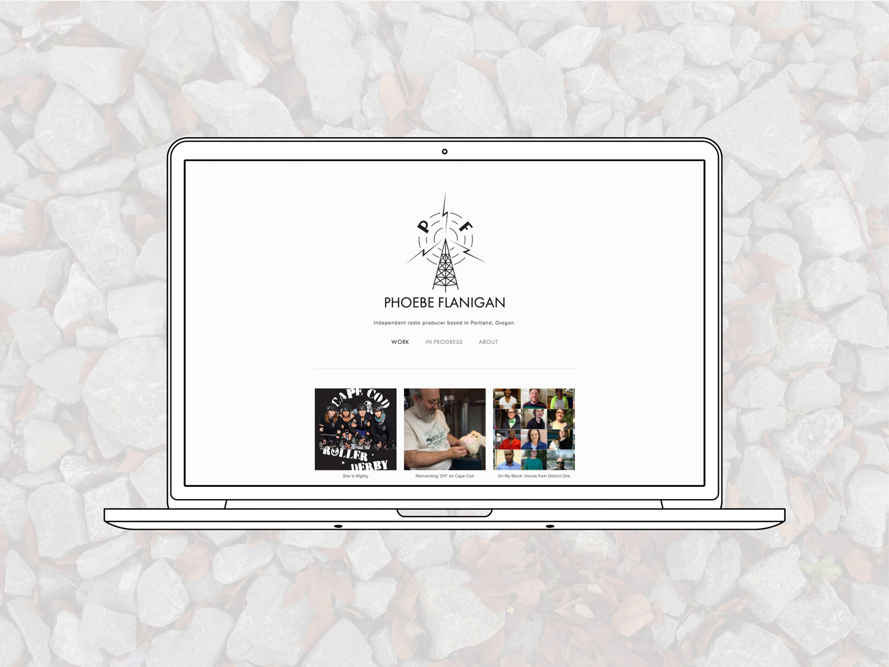
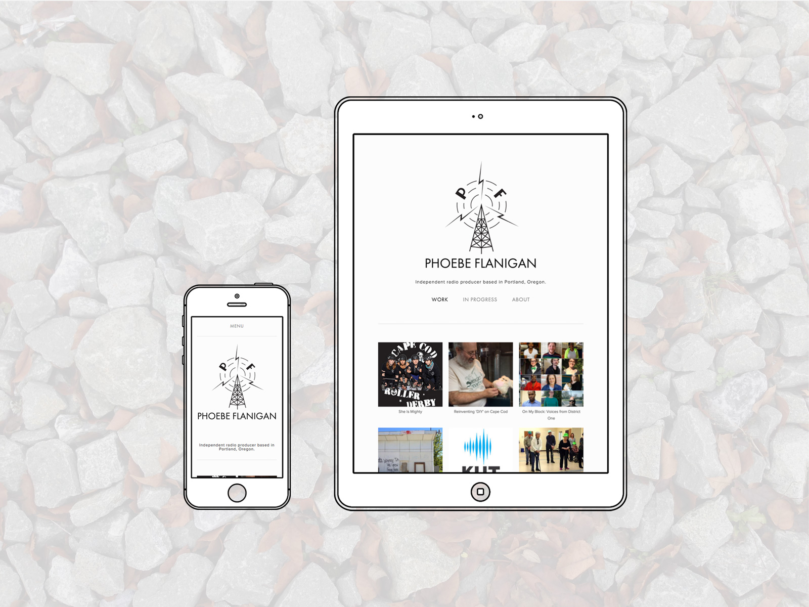
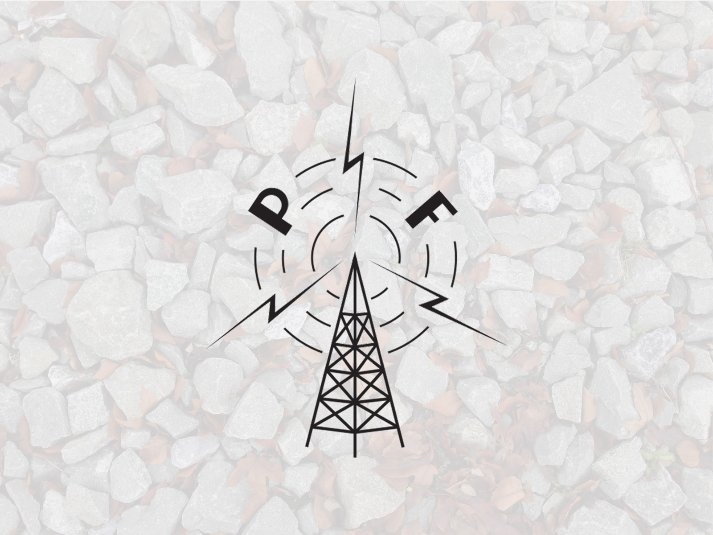
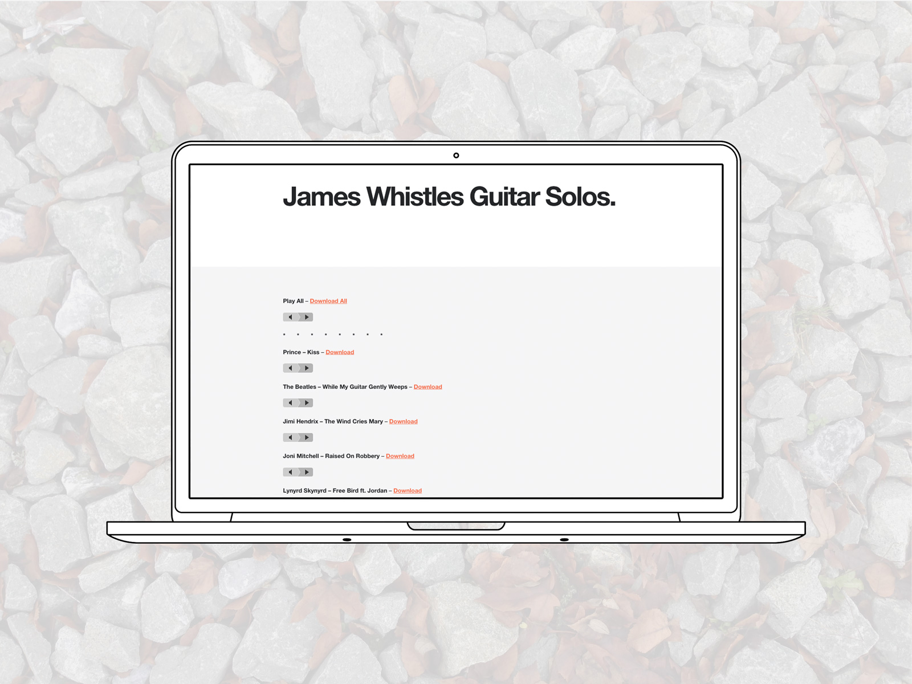
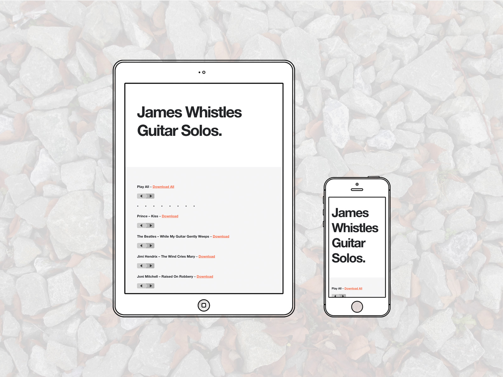

Squarespace:
Phoebe Flanigan
Original logo and website design for an independent radio producer. A simple website that clearly communicates her past work, direction, and personal narrative.
The website can be viewed live at phoebeflanigan.com.
  
Tools used:
- Illustrator
- Squarespace
##Wordpress:
James Whistles Guitar Solos
Website design for James, who whistles the guitar solos in classic songs.
The website can be viewed live at jameswhistlesguitarsolos.com.
 
Tools used:
- Wordpress